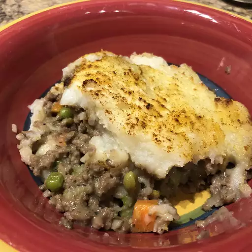

Shepherd's Pie

Here is a shepherd's pie, made easy, that your family will love.
Ingredients
- 1 pound ground beef
- 1 medium onion, chopped
- 1 (10.75 ounce) can Campbell's® Condensed Cream of Mushroom Soup (Regular or 98% Fat Free)
- 1 tablespoon ketchup
- ⅛ teaspoon ground black pepper
- 1 cup frozen peas and carrots
- 1 cup milk
- 2 tablespoons butter
- 1 ⅓ cups instant mashed potato flakes or buds
Steps
- Cook beef and onion in 10-inch skillet over medium-high heat until well browned, stirring to break up meat. Pour off fat.
- Stir soup, ketchup, black pepper and peas and carrots into skillet. Spoon beef mixture in 9-inch pie plate.
- Heat milk and butter in 2-quart saucepan over medium-high heat to a boil. Remove from heat. Slowly stir in potatoes. Spoon potatoes over beef mixture.
- Bake at 400 degrees F for 15 minutes or until potatoes are lightly browned.
Home